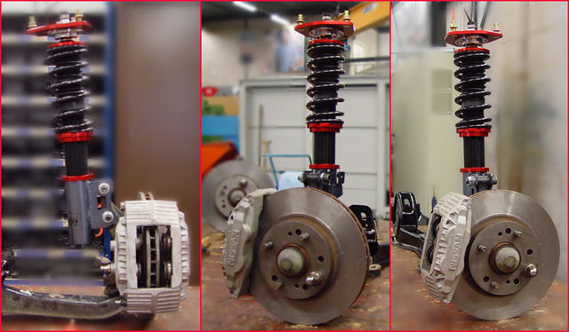

-
Actually you don't have to pay for an alignment. Just get it checked.
I don't understand how you can try and sell suspension parts you haven't even tried on the street or track with your own car, aligned them and stress/abuse tested them.
I'm a hunter certified alignment tech. I know what Im doing when it comes to alignments. I can and do wrap my brain around simple and advanced suspension physics. Which is why I can align any car you give me. Even a 240sx with everything adjustable, and it nearly un driveable low.splatter fake blood on fubar'd quarter and roll out.
pedestrians=mobile clipping points -Benedict on PurePontiackid's 280zx -
I've never seen someone do that before.
2001 Mazda Miata LS
also a 1989 Nissan 240SX
50th AE Build Thread SOLD 2015 -
Not doubting you, I just haven't heard any actual problems stemming from using my adapters, I'm sure you'd have no trouble setting up a car with themRustspecs13;338113 wrote: Actually you don't have to pay for an alignment. Just get it checked.
I don't understand how you can try and sell suspension parts you haven't even tried on the street or track with your own car, aligned them and stress/abuse tested them.
I'm a hunter certified alignment tech. I know what Im doing when it comes to alignments. I can and do wrap my brain around simple and advanced suspension physics. Which is why I can align any car you give me. Even a 240sx with everything adjustable, and it nearly un driveable low. -
Then you haven't read a word Ive said. Or you have, you just don't understand what they mean.G-E;338115 wrote: Not doubting you, I just haven't heard any actual problems stemming from using my adapters, I'm sure you'd have no trouble setting up a car with them
You'd see it for yourself if you had a computer print out. Or it displayed on an alignment machine.splatter fake blood on fubar'd quarter and roll out.
pedestrians=mobile clipping points -Benedict on PurePontiackid's 280zx -
Next week I should be able to get them on a parts car which is already aligned properly, I'll show you bums pics -
Remarkably 0/0 people have had a problem with these working.ExtremeAtheist;338120 wrote: No one has used your adapters so how could they report any problems??? -
No no, that's not it at all… there's many ways to install them, unlike the stance sleeves, and since there are many ways, each way has different effects, some positive and some negative, you can overcome the negative ones in various ways, some require no additional products, the key being you start with which of the positives do you want to haveNissanXRMA wrote: This. From what i've read, you'll need z31 specific tension rods, and bumpsteer spaces just to get these to work? And they've never been tested, nor guaranteed to work? GE, for being an engineer… I don't understand what your problem is.
Let's go back to every modification, just by lowering the car we throw off the inherent steering and camber arc, most people never bother to correct this… the fact that they don't correct it, doesn't mean they don't need additional products to fix it… but no one is complaining about that -
So with stance sleeves (You did say every modification), at normal ride height, what needs to be fixed again? Nothing. Nothing needs to be corrected since it was designed to work.G-E;338130 wrote: No no, that's not it at all… there's many ways to install them, unlike the stance sleeves, and since there are many ways, each way has different effects, some positive and some negative, you can overcome the negative ones in various ways, some require no additional products, the key being you start with which of the positives do you want to have
Except you don't know what the negative or positive effects are, and are just speculating that you can "overcome the negative effects"
G-E;338130 wrote:
Let's go back to every modification, just by lowering the car we throw off the inherent steering and camber arc, most people never bother to correct this… the fact that they don't correct it, doesn't mean they don't need additional products to fix it… but no one is complaining about that -
LMAO we should tell formula 1 they have been doing it wrong for years now.G-E;338103 wrote: They are not loaded incorrectly, unless every car that uses offset mount points is loading incorrectly, in that case there are >130 million cars loading their suspension incorrectly1986 300ZX GLL auto non turbo -
you're retarded if you think that G-E's fastening method is the only instance of someone using this type of mounting. take a look at an s13 coilover, draw a line from the top nut that holds the assembly together, and see if it crosses the ball joint.Hairyballs;338428 wrote: LMAO we should tell formula 1 they have been doing it wrong for years now.
i see the reason why you guys are presuming that because the shock body itself is not in line with the axis on which the assembly itself turns, but in reality, it might NOT screw anything simply because there are other cars using offset strut assemblies that are not in line with where the entire assembly rotates.

also, its ignorant to say that having to buy a bunch of extra shit to make something work when all you "NEED" to do is buy stance or powertrix and its virtually bolt on with v2 spacers and everything is like stock.
remind me why i would want to install an s13/14 rear end in my z31 if i wanted my suspension to remain stock? if there are certain changes that will improve how comfortable the driver feels with the way it handles, then perhaps some of the "negative" side effects are moot since this setup may provide something a "like stock" setup might not be able to.
creative crit, guys… i get the "test it out first" stuff, but this is more of a "show me something im never gonna put to use cause i barely track my car anyways" discussion just to bust G-E's balls. i have a better idea, why doesn't someone else make an adapter that would turn the base of the strut cartridge 180 degrees if you think that's going to be the biggest issue.
if G-E is wrong, he will post exactly what's wrong here, and i'm sure he will design something new to correct it and the product could still be made and you guys can still enjoy the world of cheaper/used coilovers.
i really don't see what all the fuss is about. he's just gauging interest in the idea of producing an adapter, whether the CURRENT design is flawed was not really the intention of this thread, I don't think.
but whatever. -
At normal ride height, unadjustable adapters I made are off center by much less than what I posted pics of, but my whole argument is that the center can also be moved
If we rotate the adapter to mount the coilover on the aft side, then mount the camber plate longitudinally, it can move the upper mount back to match, AND give you greater turn-in camber without adding static camber… but the people arguing are only focused on the scenario where the mount point hasn't been moved, and therefore there's a tilting effect on the spindle
Lack of vision …
Anyway I spoke to my machinist about making the adapter camber adjustable, and it looks like I have a way that won't increase the cost much, and won't undo itself under hard driving… the only reason I'm adding this adjustability is because it gives you ANOTHER way to adjust it, for even MORE possible configurations
I will still show the skeptics the simple version works however -
http://z31performance.com/attachment…1&d=1373349299pabloqc;338441 wrote: 1 what i see , 2 what i think at first view , 3 if million of car are equip like that iam sure its act like 3 or i wish
#2 is correct. Alignment is only affected at the actual pivot points. #3 there is no way for those parts to rotate along that axis, so that assumption is wrong. You can have the strut mounting/connection any place and orientation that you like, as long as pivot points remain in their original spots. Only when you change the actual pivot points like the upper mount or lower ball joint then that affects camber/caster.
You can have high angles of the actual product (strut body) between the pivots granted that you have enough clearance with parts such as high misalignment spacers, spherical ends, and high-angle ball joints and nothing contacts anything stationary like the car body or fenders other suspension parts.
1986 300ZX Turbo…sold
1990 Skyline GT-R…new money pit
2014 Juke Nismo RS 6-speed…daily -
I put this into a suspension analyzer to confirm my thoughts. When you take compression and rebound out of the equation, at rest, the only thing that matters is lower ball joint and upper pillow ball. Everything moves about the imaginary straight line, like "bent" or curved tie rods and control arms, they don't need to be a straight line. If you put these in, and kept the same locations for these points, and installed bump steer spacers to move the tie rod pivot back to the same location due to the angle of the spindle, you would be back and more or less "stock" alignment. Turning the wheels with no suspension travel would keep to same alignment as factory parts. So, at the alignment shop, everything would look the same, as they only adjust and measure alignment at ride height. The thing that changes here is when the strut length changes, as it's extension and compression is not in that imaginary straight line. Dynamically, the wheel will move forward and aft and inboard/outboard based on the angle of the offset strut as is moves when the wheels are turned. This in turn will change various things like caster/camber/and stagger of the wheels. There will also be "bump steer" as the correction initially made due to the angle of the knuckle changing during extension/compression. Also, as you would expect… braking force will transmit into the strut with it angled like that. That being said. These changes dynamically are pretty small, with changes to anti-dive being the biggest. I would suspect that there would be no "noticeable" bump steer or huge changes, negative or positive, to they geometry. That being said, it's still pretty sloppy and I wouldn't do it. I did not, and will not, take the time to use real world numbers to compute the actual change in that setup. I just took a real world strut setup, offset it 5 inches (more than the part shown, as it looks to me) and cycled the suspension through movements to see what changes and how much with this one change to geometry. However, I would estimate anti-dive to change around -20% A car with 100% anti-dive won't dive at all when braking. I don't know what the Z has in factory setup, but a change of -20% or 20% of positive dive force from braking could be significant. Race cars and cars with stiffer than stock suspension don't really need anti-dive like a stock soft suspension car does, but if you did this setup on a stock spring rate Z it would probably make it dive like a caddy. Even with stiff springs, it could hurt braking performance. Excessive negative anti-dive could theoretically cause front wheel hop on braking, ahha. -
Holy crap some sanity finally, thanks
I will add that knowing the geometry, it's not an anti-dive setup to begin with, the change will be very little as you say -

Copyright © 2006–. All rights reserved. Privacy Policy